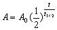

放射衰變計算
更新日期: 2011年1月31日
參考公式:

程式輸入的次序是根據上述公式變數出現的次序。A為在時間t時的放射性強度/粒子數，A0為起始時放射性強度/粒子數，t為時間，t1/2為半衰期。
程式 (64 bytes)
ClrMemory: ?→A: ?→B: ?→C: ?→D:
A=0 => . 5^(C÷D)B◢ B=0 => . 5^(-C÷D)A◢
D => D log( . 5 , A÷B◢ C log( A÷B , . 5
例題1: 某放射性同位素的初始放射強度為每秒2000次蛻變，半衰期為2小時，求經過3小時後放射強度。
按 Prog 1 再按 EXE (不輸入數值代表計算時間t時放射強度)
2000 EXE (起始強度) 3 EXE (時間)
2 EXE (半衰期，顯示3小時後強度為 每秒707 次蛻變)
例題2: 某放射性同位素的經過3小時後放射強度為每秒707次蛻變，半衰期為2小時，求起始時放射強度。
按 Prog 1 再按 707 EXE (時間t時放射強度)
EXE (不輸入數值代表計算起始強度) 3 EXE (時間)
2 EXE (半衰期，顯示起始強度為 每秒2000 次蛻變)
例題3: 某放射性同位素的初始放射強度為每秒2000次蛻變，半衰期為2小時，求經過多少時間後放射強度變為每秒707次蛻變。
按 Prog 1 再按 707 EXE (時間t時放射強度)
2000 EXE (起始強度) EXE (不輸入數值代表計算時間)
2 EXE (半衰期，顯示時間為3小時)
例題4: 某放射性同位素的初始放射強度為每秒2000次蛻變，經過3小時後放射強度為每秒707次蛻變，求半衰期。
按 Prog 1 再按 707 EXE (時間t時放射強度)
2000 EXE (起始強度) 3 EXE (時間)
EXE (不輸入數值代表計算半衰期，顯示半衰期為2小時)
返回 CASIO fx-50FH、fx-3650P II、fx-50FH II及fx-50F PLUS 程式集